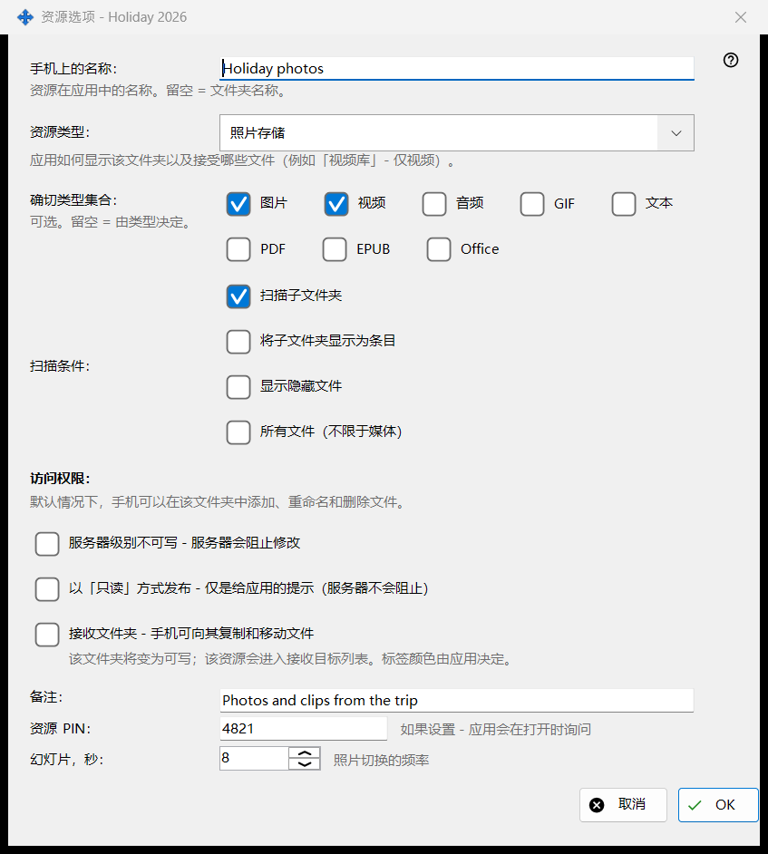
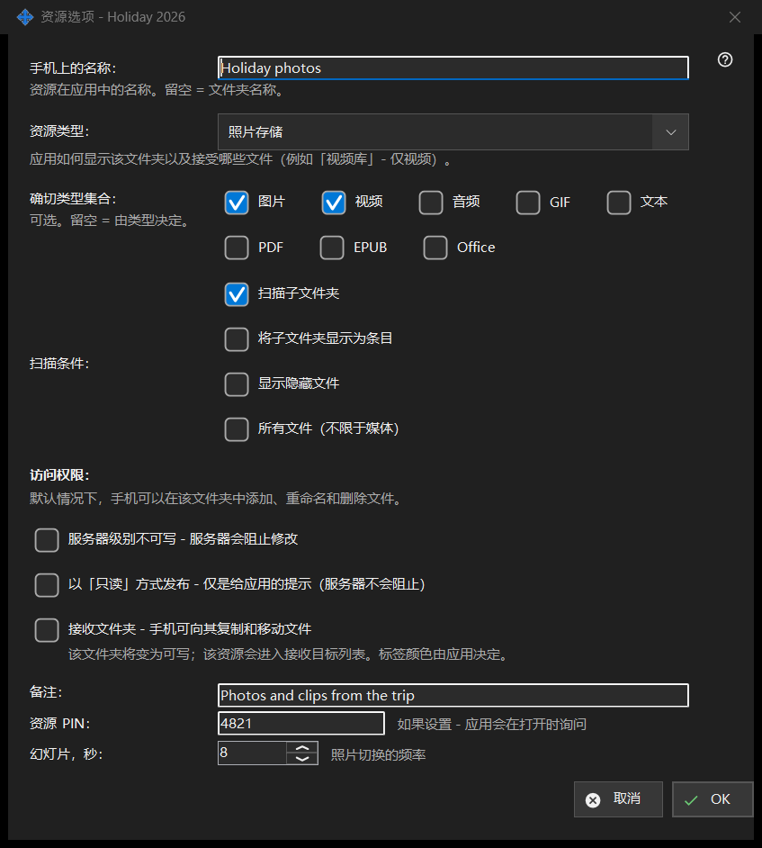

资源选项
用途说明
一个共享文件夹的选项：它在手机上的名称、类型、显示哪些文件、谁可以修改，以及一些附加项。它从主窗口的「编辑」、文件夹所在行和资源向导中打开。实际的标题以文件夹名称结尾。


操作顺序
- 设置手机显示的名称。
- 选择资源类型或确切的媒体集合。
- 设置扫描条件。
- 选择访问权限。
- 打开「高级选项」填写备注、PIN 和幻灯片间隔。
- 点击「确定」。
界面元素
名称和类型
「手机上的名称：」是文件夹在应用中的名称；留空表示使用文件夹名。「资源类型：」提供普通文件夹、音频库、视频库、照片存储和文档。「确切类型集合：」选择确切的种类（图片、视频、音频、文本、所有文件）；留空表示由类型决定。
扫描条件
扫描子文件夹、把子文件夹显示为条目、显示隐藏文件，以及显示所有文件而不仅是媒体文件。
访问权限
默认情况下，手机可以在该文件夹中添加、重命名和删除文件。「只读」是真正的锁定：服务器会拒绝更改。只读提示只是让应用隐藏编辑按钮；服务器并不阻止。目标文件夹可以接收手机复制和移动来的文件；它会变为可写并加入接收者列表，其颜色由应用选择。
高级选项
一条备注（可选）、该资源的 PIN（打开资源时应用会要求输入）以及以秒为单位的幻灯片间隔。确认时，设置会发送到服务器。